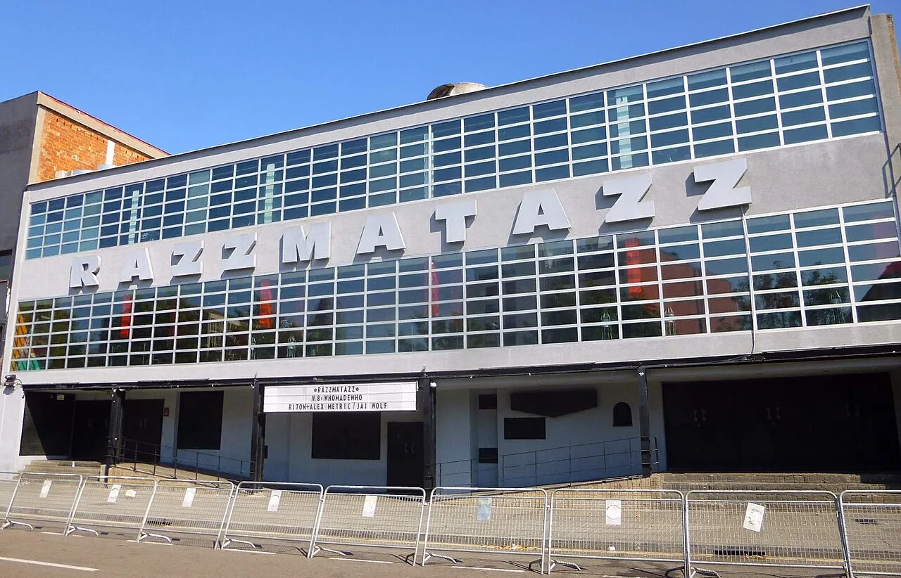
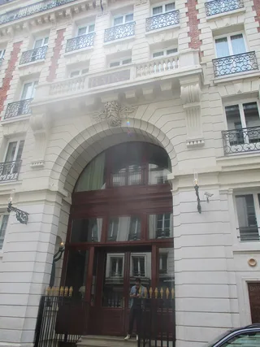

Barcelona clubs
The best clubs in Barcelona, from Zeleste to Razzmatazz
A live venue that became the city's biggest club, an electronic night thirty years deep in a former concert hall, and a flamenco room turned dance floor: the best clubs in Barcelona now.
Buildings changing use, not clubs starting from nothing.
Barcelona's clubbing story is really a story about buildings changing use rather than clubs opening from nothing. A live-music hall from the 1970s became the city's biggest club. A theatre that started life as an ice rink became the home of one of its longest-running electronic nights. A flamenco room from the 1920s is now a dance-music club with the same name it always had. This guide follows that thread from Zeleste to the clubs open tonight, and it ends with where in the city to find them.
Zeleste, Razzmatazz and the room that grew out of a live venue.
Zeleste opened in 1973 on Carrer d'Argenteria, in Barcelona's old town, as a live-music venue rather than a club. It ran there for close to three decades before it closed.

Razzmatazz opened in 2000 as Zeleste's named heir, in a former industrial building in the Poblenou district on the other side of the city, and it is now Barcelona's biggest club: five separate rooms, each running its own music policy on a given night, from techno and house to indie and pop. It takes its name from the Pulp song, and Wikipedia records the Flaming Lips as the first act to play the venue. Razzmatazz's scale, not any single genre, is what makes it the head of Barcelona's current club scene: no other room in the city runs five different nights under one roof.
Sala Apolo and Nitsa.
Sala Apolo, on Carrer Nou de la Rambla, has been changing use since the early twentieth century. Sources agree the building has passed through several identities as the city around it changed, and settle on one certain date: it operated as a public ice rink, officially inaugurated in September 1951, before becoming the concert hall it is now.
Nitsa, one of Barcelona's first electronic club nights and still one of the best techno clubs in Barcelona, began as a weekly party in 1993 (some sources give 1994), then moved into Sala Apolo in September 1996, where it still runs. It is still listed on DJ Mag's Top 100 Clubs, not for the building but for the night itself: a room that has kept a serious electronic booking policy inside a much older concert hall for three decades.
Macarena Club: a flamenco tablao that became a dance-music room.
Macarena Club, just off La Rambla, has kept its name since the 1920s, when the same address operated as a flamenco tablao rather than a nightclub. It was refurbished in 2001 into what Resident Advisor calls one of the smallest, most tightly run rooms in the city: a single dance floor, capacity of about 300, and a DJ booth close enough to the crowd that a set there feels closer to a house party than a club night. Its music policy today is electronic dance music, a full turn from the room's flamenco original.
The best clubs in Barcelona now.
These are the best clubs in Barcelona open now, drawn from the venues that repeat across Resident Advisor's, Tripadvisor's and barcelona.com's current guides, plus the history above.
| Club | Area | Music and character | Best for |
|---|---|---|---|
| Razzmatazz | Poblenou | Five rooms, each with its own policy, from techno and house to indie and pop | The city's biggest club, several nights under one roof |
| Sala Apolo (Nitsa) | Poble Sec | An electronic club night running since 1996 inside a much older concert hall | A long, serious electronic booking policy in a historic room |
| Macarena Club | Barri Gòtic, off La Rambla | A single dance floor, capacity about 300, electronic dance music | An intimate room that feels closer to a house party than a club |
| Moog | Barri Gòtic | Long-running and named across every current guide checked for this page | A dependable stop in the old town |
Opening hours and door policy change often. Check each club's own listings or its Resident Advisor page for the week you are going.
Where to go: Gothic Quarter, Eixample and the beach clubs.
Barcelona nightlife splits by district as much as by venue. The Gothic Quarter and the old town around Razzmatazz's Poblenou neighbour hold the bar-first, club-later crowd. Eixample runs later and more upscale. Port Olímpic, along the beachfront, is where the city's beach clubs sit, a category of their own that runs on daylight as much as on darkness.
That is Barcelona's club scene from the outside, filmed for a touring series rather than a single room. From the inside, here is one more route through the same night.
For the rest, the Selector plays a set at random from all 62,824 in the catalogue behind this site, which is a faster way into a night out than one more ranked list.
Barcelona clubs FAQ.
What is the most popular nightclub in Barcelona?
Razzmatazz, open since 2000 in Poblenou, is Barcelona's biggest and most-cited club: five rooms, each with its own music policy, carrying the name of the earlier live venue Zeleste as its heir.
Which club is the best in Barcelona?
There is no single answer. Razzmatazz is the biggest and best known. Nitsa, inside Sala Apolo since 1996, has the longest continuous electronic booking policy. Macarena Club is the smallest and most intimate, in a room that has operated under the same name since the 1920s.
Is Barcelona good for clubbing?
Yes. It has one of Europe's largest multi-room clubs in Razzmatazz, an electronic night in Nitsa that has run for three decades in the same building, and a smaller scene of rooms like Macarena Club that predate techno and house entirely.
What is the best area in Barcelona for nightlife?
The Gothic Quarter and old town for bars before a club, Eixample for a later and more upscale night, and Port Olímpic for the city's beachfront clubs, which run through the day as well as the night.
What happened to Zeleste?
Zeleste was a live-music venue on Carrer d'Argenteria, in Barcelona's old town, that ran from 1973 until it closed. Razzmatazz, which opened in 2000 across the city in Poblenou, is its named heir.
Sources.
- Wikipedia: Razzmatazz (club)
- WeBarcelona: Razzmatazz, on Zeleste's 1973 opening
- Turisme de Catalunya: Razzmatazz Barcelona
- The New Barcelona Post: Did you know that Sala Apolo was an amusement park?
- DJ Mag: Nitsa, Top 100 Clubs
- Primavera Sound: Nitsa Club, 30 anys transformant l'escena electrònica
- Sala Apolo: Nitsa
- Resident Advisor: RA In Residence, Macarena Club
- Resident Advisor: Best Clubs in Barcelona in 2026
- Barcelona Tourist Guide: Macarena Club in Barcelona
Continue reading
Read next.
 A12Guide / Berlin clubs / ~10 min
A12Guide / Berlin clubs / ~10 minBest Clubs in Berlin: The Legends and the Ones Still Open
The rooms that made Berlin a techno city, the famous clubs that closed, and the best clubs in Berlin that are still open.
Read article →
A13Guide / Paris clubs / ~6 minBest Clubs in Paris: From Le Palace to Rex Club
Le Palace, Les Bains Douches and Rex Club: the clubs that made Paris nightlife, how each became famous, and the best clubs in Paris open now.
Read article → A32List / Europe festivals / ~13 min
A32List / Europe festivals / ~13 minBest Electronic Music Festivals in Europe 2027, Compared
Fourteen major festivals and seven smaller ones, from Tomorrowland to Garbicz, compared by sound, scale, setting and 2027 dates.
Read article → A04Timeline / German music / ~11 min
A04Timeline / German music / ~11 minGerman Electronic Music History: From Kraftwerk to Techno
Cologne studios, Düsseldorf electronic pop, Frankfurt trance and the Detroit-Berlin alliance.
Read article →